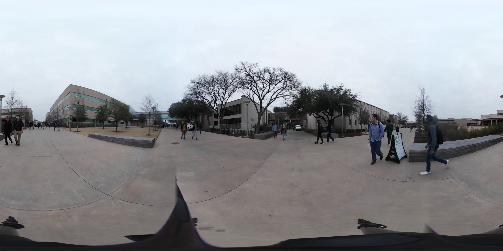
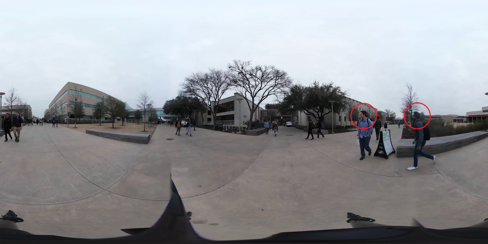
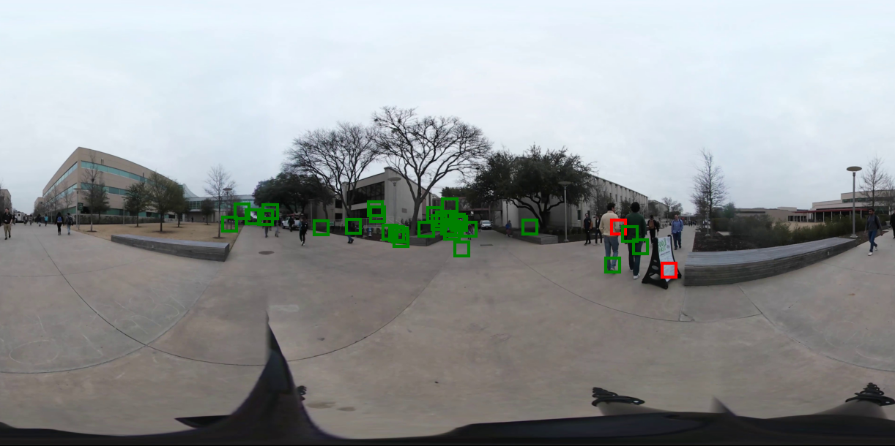
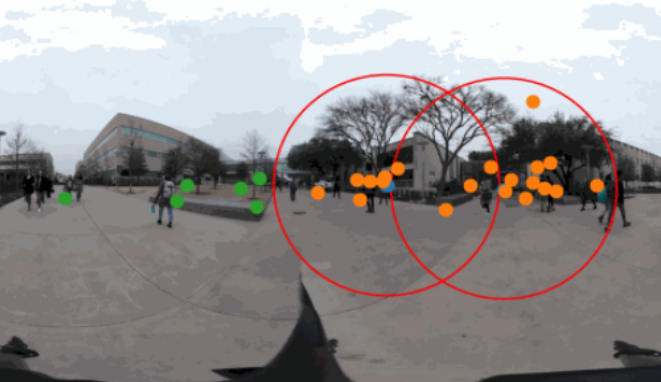
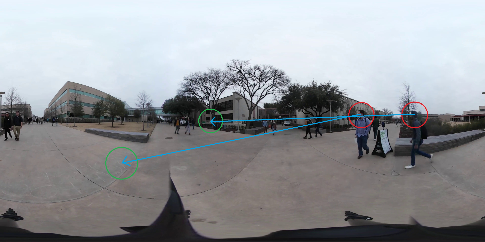
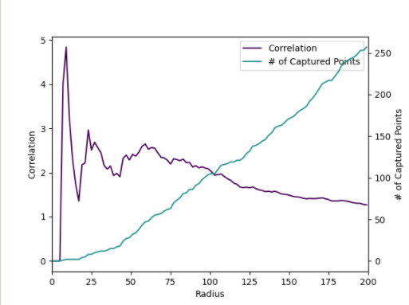
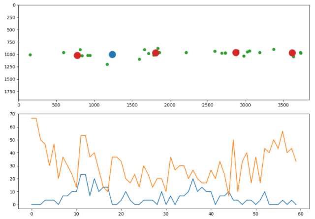

VR Viewport Analysis
Agustin Diocares, Matthew Vu, David Wank, Natasha Trayers, Sunny Guan
The Problem
Abstract
- Salient Features
- User Viewport
Original
Salient Features
User Viewports
Radius
- Prove Correlation
- Predict Viewport Clusters
Hypothesis
Salient features can be used to predict user viewport, which can be used to train a prediction model that dynamically render important areas in higher resolution to reduce data bandwidth
Short Prediction

Long Prediction
Correlation Ratio
% of captured (orange) dots: \(\dfrac{\text{# of orange dots}}{\text{# of all dots}}\)
% of screen covered: \(\dfrac{\text{area in red circles}}{\text{area of screen}}\)
Ratio: \(\dfrac{\text{% of captured dots}}{\text{% of screen covered}}\)
Ratio vs Radius
Upper Bound with K-Means
Orange line: best possible correlation ratio
Blue line: salient feature correlation ratio
Prediction Model
Green: predicted viewport area
White: actual viewport area
Median: \(3756 \text{ (pixels squared) } \Longrightarrow 61.28 \text{ pixels } \Longrightarrow 11\% \text{ loss }\)
IQR: \(1735 \text{ (pixels squared) } \Longrightarrow 41.66 \text{ pixels }\)
Thank you!
On Github: github.com/ACM-Research/vr-viewport-analysis